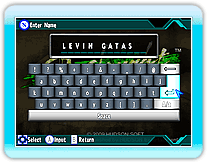

9 |
Starting the Game |
 |
|
On the Title Screen press

If playing for the first time, the next screen will ask you to input the player name to be used during the game.
Names can be up to 13 characters long. (Names containing inappropriate language may not be allowed.) After confirming your player name, set your country of residence on the Country Selection Screen.
Next the Game Select Screen will appear. Choose a mode with the Pointer and confirm with
If saved data exists, after selecting "Story Mode" you can choose "New Game" or "Continue". Choose "New Game" to start a new game and "Continue" to continue a previous game.
|
 |
 |
 |